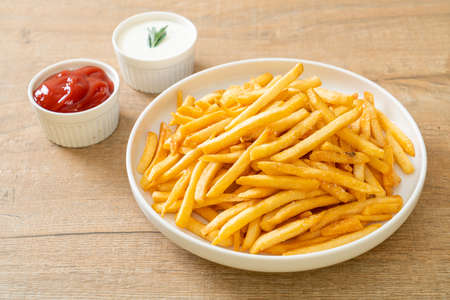

Papas Fritas
Receta de papas fritas caseras

Ingredientes
- 3 o 4 papas(300grs)
- Aceite
- Sal
Elaboración(Pasos)
- pelar las papas
- Cortarlas en baston
- Calentar el aceite en una sarten
- Cocinar hasta que esten doradas
- Removerlas de aceite y salar a gusto
todos los derechos reservados por: potatorecipes inc.